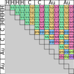

2.1.6.2.1. OrbitalInfo
- class OrbitalInfo(atomic_numbers, shell_dict, shell_resolved=False)[source]
Bases:
objectData container for all information relating to a system’s orbs set.
This class collects all information about a system’s orbs set and its orbitals into one place. This also permits calculations to
- Parameters:
atomic_numbers (
Union[List[Tensor],Tensor]) – Atomic numbers of the atoms present in the system.shell_dict (
Dict[int,List[int]]) – A dictionary that yields the angular momenta of each shell for a given atomic number e.g. {1: [0], 2: [0, 0, 0] 6: [0, 1]} designates H as having 1s shell, He as having 3s shells and C as having 1s & 1p shell. Values must be lists of integers, not torch tensors.shell_resolved (
bool) – If True, calculations will be shell-resolved, if False they will be atom-resolved. This is used to automatically return the correct resolution information. [DEFAULT=False]
- n_orbitals
orbital count.
- Type:
Tensor
- n_shells
shell count.
- Type:
Tensor
- n_atoms
atoms count.
- Type:
Tensor
- orbital_matrix_shape
Anticipated orbital matrix shape, e.g. Hamiltonian or overlap matrices.
- Type:
Size
- shell_matrix_shape
Similar to
orbital_matrix_shapebut with only one matrix-element per shell.- Type:
Size
- atomic_matrix_shape
Similar to
shell_matrix_shapebut with only one matrix-element per atom.- Type:
Size
- shell_ls
Azimuthal number associated with each shell.
- Type:
Tensor
- shell_ns
The number of each shell, as defined by the order in which they were specified for relevant species.
- Type:
Tensor
Examples
>>> from tbmalt import Geometry, OrbitalInfo >>> from ase.build.molecule import molecule >>> geometry = Geometry.from_ase_atoms(molecule('CH4')) # Shell dictionary informing the `OrbitalInfo` entity that hydrogen # atoms have a single s shell and carbon atoms an s and p shell. >>> shell_dict = {1: [0], 6: [0, 1]} >>> orbs = OrbitalInfo(geometry.atomic_numbers, shell_dict)
Warning
The order that each element’s shell is specified in
shell_dictis taken as the order in which integrals are yielded by SkFeed objects; i.e. SkFeed.off_site(…, [atom_1_shell, atom_2_shell], …) will return the integral associated with the atom_1_shell’th shell on atom 1 and the atom_2_shell’th shell on atom 2.Attributes and Properties
deviceThe device on which the OrbitalInfo object resides.
n_resn_shellsif shell resolved elsen_atomson_atomsIdentifies which atom each orbital belongs to.
on_resReturns
on_atomsif atom resolved &on_shellsif not.on_shellsIdentifies which shell each orbital belongs to.
orbs_per_atomNumber of orbitals associated with each atom.
orbs_per_resReturns orbs_per_atom if atom resolved & orbs_per_shell if not.
orbs_per_shellNumber of orbitals associated with each shell.
res_matrix_shapeshell_matrix_shapeif shell resolved elseshell_resolvedshells_per_atomReturns the number of shells associated with each atom.
Methods
- classmethod from_hdf5(source, device=None)[source]
Instantiate a OrbitalInfo instances from an HDF5 group.
- Parameters:
source (
Group) – An HDF5 group(s) containing OrbitalInfo instance.device (
Optional[device]) – Device on which to place tensors. [DEFAULT=None]
- Return type:
- Returns:
orbs – The resulting OrbitalInfo object.
- atomic_number_matrix(form='full')[source]
Atomic numbers associated with each orbital-orbital pair.
This is analogous to the
azimuthal_matrixtensor but with atomic numbers rather than azimuthal quantum numbers. Shell and atomic forms can also be returned.- Parameters:
form (
Literal['full','shell','atomic']) –Specifies the form of the atomic number matrix:
”full”: 1 matrix-element per orbital-orbital interaction.
”shell”: 1 matrix-element per shell-shell interaction block.
”atomic”: 1 matrix-element per atom-atom interaction block.
A more in-depth description of this argument’s effects is given in
azimuthal_matrix(). [DEFAULT=”full”]- Return type:
Tensor- Returns:
atomic_number_matrix – An NxNx2 tensor specifying the atomic numbers associated with each interaction. N can be the number of orbitals, shells or atoms depending on
form.- Raises:
ValueError – If an invalid
formoption is passed.
- azimuthal_matrix(form='full', sort=False, mask_on_site=False, mask_diag=False, mask_lower=False)[source]
Azimuthal quantum numbers for each orbs-orbs interaction.
Tensor defining the azimuthal quantum numbers (ℓ) associated with each orbital-orbital interaction element. Alternately, a shell form of the azimuthal matrix can be returned which defines only one element per shell-shell interaction block. Segments of the matrix can be masked out with -1 values using the mask_* arguments.
- Parameters:
form (
Literal['full','shell','atomic']) –Specifies the form of the azimuthal matrix:
”full”: one matrix-element per orbital-orbital interaction.
”shell”: Causes the ℓ-matrix to be returned in shell form where each shell-shell interaction block is represented by a single element.
See the notes section for more information. [DEFAULT=”full”]
sort (
bool) – Sort along the last dimension so the lowest ℓ value in each ℓ-pair comes first. [DEFAULT=False]mask_on_site (
bool) – Masks on-site blocks, but leaves diagonals unaffected.[DEFAULT=False]mask_diag (
bool) – Masks diagonal elements in full matrix mode but has no effect on shell form matrices. [DEFAULT=False]mask_lower (
bool) – Masks lower triangle of the ℓ-matrix. [DEFAULT=False]
- Return type:
Tensor- Returns:
azimuthal_matrix – Tensor defining the azimuthal quantum numbers associated with the orbital-orbital interactions.
Notes
For an N-orbital system a NxNx2 matrix will be returned where the i’th, j’th vector lists the ℓ values of the i’th & j’th orbitals; these being the orbitals associated with the i’th, j’th element of the Hamiltonian & overlap matrices.
The
sortoption can be used to enable all interaction of a given type to be gathered with a single call, e.g. [0, 1] rather than two separate calls [0, 1] & [1, 0].For an H4C2Au2 molecule, the full azimuthal matrix with diagonal, on-site & lower-triangle masking will take the form:
Where all elements in the ss blocks equal [0, 0], sp: [0, 1], ps: [1, 0], etc. Note that if
sortis True then the ps elements will converted from [1, 0] to [0, 1] during sorting. Black & grey indicate areas of the matrix that have been masked out by setting their values to -1. A masking value of -1 is chosen as it is a invalid azimuthal quantum number, & is thus less likely to result in collision. Ifshellis True then the matrix will be reduced to:As the diagonal elements are contained within the on-site blocks it is not possible to selectively mask & unmask them. Note that masking of matrix diagonals are affected only by the
mask_diagoption and not themask_on_siteoption.A dense matrix implementation is used by this function as the sparse matrix code in pytorch, as of version-1.7, is not stable or mature enough to support the types of operations that the returned tensor is intended to perform.
Note that an atomic reduction of the azimuthal matrix is not possible. Hence there is no “atomic” option like that found in
atomic_number_matrix.- Raises:
ValueError – If an invalid
formoption is passed.
Warning
Azimuthal sorting (
sort) should be used with care as it will introduce inconsistencies with the other matrices. Only use this option if you know what you are doing.
- index_matrix(form='full')[source]
Indices of the atoms associated with each orbital pair.
Produces a tensor specifying the indices of the atoms associate with each orbital-orbital pair. This is functionality identical to the
atomic_number_matrixoperation; differing only in that it returns atom indices rather than atomic numbers. Seeatomic_number_matrixdocumentation for more information.- Parameters:
form (
Literal['full','shell','atomic']) –Specifies the form of the index matrix:
”full”: 1 matrix-element per orbital-orbital interaction.
”shell”: 1 matrix-element per shell-shell interaction block.
”atomic”: 1 matrix-element per atom-atom interaction block.
A more in-depth description of this argument’s effects is given in
azimuthal_matrix(). [DEFAULT=”full”]- Return type:
Tensor- Returns:
index_matrix – A NxNx2 tensor specifying the indices of the atoms associated with each interaction. N can be the number of orbitals, shells or atoms depending on
form.- Raises:
ValueError – If an invalid
formoption is passed.
- matrix_shape(form)[source]
Returns the expected shape of a matrix based on
form.This returns either orbital_matrix_shape, shell_matrix_shape or atomic_matrix_shape based on the value provided for
form.- Parameters:
form (
Literal['full','shell','atomic']) –Specifies the form of the atomic number matrix:
”full”: One matrix-element for each orbital-orbital pair.
”shell”: One matrix-element for each shell-shell pair.
”atomic”: One matrix-element for each atom-atom pair.
- Return type:
Size- Returns:
shape – A torch.Size object specifying the associated shape.
- n_orbs_on_species(species)[source]
Returns the number of orbitals on a given species.
- Parameters:
species (
Union[int,Tensor])- Return type:
Tensor
- n_shells_on_species(species)[source]
Returns the number of shells on a given species.
- Parameters:
species (
Union[int,Tensor])- Return type:
Tensor
- shell_number_matrix(form='full')[source]
Shell numbers associated with each orbital-orbital pair.
This is analogous to the
azimuthal_matrixtensor but with shell numbers rather than azimuthal quantum numbers. The shell number for each species are taken from the order in which they are defined in the OrbitalInfo.shell_dict.- Parameters:
form (
Literal['full','shell','atomic']) –Specifies the form of the shell number matrix:
”full”: 1 matrix-element per orbital-orbital interaction.
”shell”: 1 matrix-element per shell-shell interaction block.
A more in-depth description of this argument’s effects is given in
azimuthal_matrix(). [DEFAULT=”full”]- Return type:
Tensor- Returns:
shell_number_matrix – An NxNx2 tensor specifying the shell numbers associated with each interaction. N can be the number orbitals , shells or atoms depending on
form.- Raises:
ValueError – If an invalid
formoption is passed
- to(device)[source]
Returns a copy of the OrbitalInfo instance on the specified device.
This method creates and returns a new copy of the OrbitalInfo instance on the specified device “
device”.- Parameters:
device (<property object at 0x733e5189af20>) – Device to which all associated tensors should be moved.
- Return type:
- Returns:
orbs – Copy of the instance placed on the specified device.
Notes
If the OrbitalInfo instance is already on the desired device then self will be returned.
{kind=link}
{kind=link}